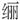

十二
王之明案是压垮弘光朝的最后一根稻草。
直接导致弘光政权垮台的左良玉兵变，完全借“太子”事为由。乙酉年三月以来，左良玉连疏交章，谓“此事未可决于二三左右，应决于国人天下，使太子不失王封，皇上不失至德，群臣不失忠荩”，“及再疏至，乃云‘束身赴阙，代太子受罪’”。[92]时值李自成军向东南运动，左军诸将急于躲避，逼主帅以替太子请命之名，移师下游：
北来太子事起，中外皆讙哗。又李自成兵日逼，良玉心动。澍（黄澍，马士英死对头）乃召三十六营大将，与之盟。良玉方沉吟未决，中一将拂衣奋起曰：“疑事毋成！若主帅必不动者，某等请自行之。”良玉不得已，乃称奉太子密诏，入诛奸臣马士英。[93]
奇怪的是，这竟也是造假。没有什么“太子密诏”；左军东来，真正原因也并非伸张正义。这个朝廷，上上下下、里里外外，全部习惯于造假，不单奸鄙者如此，以正义姿态出现的人，也要造假。
说至此，想到曾从某杂志见一文，开头这样写道：
数千年中国封建史，相当程度上是一部谎言史。“谎言”作为封建专制文化一个重要组成部分，既是维持专制的制度性手段，也是不断促使王朝更替的政治性因素。也许整个中国历史就是一部谎言不断战胜真话的历史。[94]
作者是就鸦片战争一些事，发表以上看法。对那段历史，笔者欠缺研究，不知其论是否切中，但以本文所谈明末情形看，颇能符验。
南京“三案”的共同特点是：一、全都涉及真假；二、全都涉及信任。前者能借《红楼梦》名句“假作真时真亦假”来概括，后者则恰好可由其下半句“无为有时有还无”去代表。
大悲和尚是假齐王，童妃则被皇帝本人以全部名誉保证绝不是真的；至于王之明，从头到尾，实际没有一个人知道他真实身份。而顶顶幽默的是，三案连环演绎的结果，竟是皇帝本人大有沦为天下头号假货的趋势：
余姚黄宗羲、桐城钱秉镫皆以福王为李伴读，非朱氏子也，而童氏乃真妃。故当时讽刺诗有：“隆准几曾生大耳，可哀犹自唱无愁；白门半载迷朱李，青史千年纪马牛。”[95]
前已述及，有此类议论者颇多，远不止黄、钱。我们也曾表示，欲使朱由崧变成假冒者的努力，没有道理，某种意义上也是造假。这就非常耐人寻味，为何正邪二途、对立双方一致想到的，都是就诚信问题做文章？略作思索，也不难回答：根因就在社会现实本身，权力者靠隐瞒事实来操控社会（从朱棣掩除“靖难”真相始），久之，引起适得其反的回馈：愈说某事为真，愈无人信；一言某事为假，却一呼百应、趋之若鹜。这是由长期现实雕刻而成的一种心理。
真相匮乏与流失，意味着对谣言的主动培育。权力崇拜极易导致错觉，以为权力无所不能，包括垄断事实、主宰视听；表面看，屡试不爽，实际则是个信用严重透支过程。人们无法与权力对抗，便以报复性方式来规避各种撒谎对自己的损害——凡由权力担保的信息，人们一概作相反的解读；哪怕原本真实、准确的信息，也一股脑儿地首先疑为欺诈。王之明案便很典型。最后，一切都将变成非理性的：凡属公开、权威的信息，都不真实；凡出于街谈巷议、不明来历或被宣布为“谣言”的，都值得信赖。公众不认为他们在“谣言”的口口相传中所迷失的真相，大于由权力编织的谎言，社会于是变成“谣言”泛滥的空间。这种情形，其实无人受益；权力的公信力瓦解，民众一方则深陷混乱乃至恐慌。然而它又极为合理；人们所以如此，说到底是对环境的适应，所谓“适者生存”，在无尽的漶漫消息淹没下，生存已不取决于“信”，而取决于“不信”。
于是恶性循环。真相愈匮乏，谣言愈有市场。弘光朝在其尾声，南京空气已为谣言所充斥，时有记载：“命五城等衙门缉讹言”[96]，“命五城等衙门缉讹言”[97]，“缉奸严密，下役四出扰害”[98]，然而毫无效果，《南疆绎史》称之“伪益言伪，疑更传疑”。[99]
最终来看，南京“三案”，非为大悲、童妃、太子而争，所争者“真”、“假”二字而已。如李清所言：“百官皆知伪，然民间犹啧啧真也。”[100]抑或文秉的概括：“朝廷之上皆曰伪，草野之间皆曰非伪。在内诸臣皆曰伪，在外诸臣皆曰非伪。”[101]社会纽带完全断裂，基本维系无处可寻。
乙酉年五月十一日，朱由崧、马士英出逃后，南京市民从狱中救出王之明，拥上帝位，并抓住未及逃走的大学士王铎：
“若赝太子，辜先帝恩。”群捶之。须发尽秃。挟至之龙（忻城伯赵之龙）处，汹汹欲扑杀。[102]
读此，又感觉到别样的悲哀。群众的眼睛未必雪亮，专制之下，群众确实很容易成为“不明真相的群众”。弘光朝在真相匮乏和谣言肆行中垮掉，而这并未变成人民的机会。他们仍被谎言笼罩，不能走出。他们所做的，仅仅是满怀一贯受欺骗和愚弄的愤怒，将一个骗子扶上帝位。乙酉年五月十一日这一幕，对中国人来说很值得深思。
[1] 夏完淳《续幸存录》，《明季稗史初编》卷二十四，上海书店，1988，第327页。
[2] 夏完淳《续幸存录》，《明季稗史初编》卷二十四，上海书店，1988，第327页。
[3] 夏完淳《续幸存录》，《明季稗史初编》卷二十四，上海书店，1988，第327页。
[4] 计六奇《明季南略》，中华书局，1984，第150—151页。
[5] 黄宗羲《弘光实录钞》，《南明史料（八种）》，江苏古籍出版社，1999，第67页。
[6] 文秉《甲乙事案》，《南明史料（八种）》，江苏古籍出版社，1999，第498页。
[7] 计六奇《明季南略》，中华书局，1984，第151页。
[8] 此据《甲乙事案》。《鹿樵纪闻》为“朱世杰”。
[9] 文秉《甲乙事案》，《南明史料（八种）》，江苏古籍出版社，1999，第508页。
[10] 文秉《甲乙事案》，《南明史料（八种）》，江苏古籍出版社，1999，第508页。
[11] 李清《南渡录》，《南明史料（八种）》，江苏古籍出版社，1999，第366页。
[12] 文秉《甲乙事案》，《南明史料（八种）》，江苏古籍出版社，1999，第509页。
[13] 文秉《甲乙事案》，《南明史料（八种）》，江苏古籍出版社，1999，第508页。
[14] 梅村野史《鹿樵纪闻》，台湾文献丛刊第五辑《东山国语·鹿樵纪闻》（合订本），台湾大通书局，1995，第29页。
[15] 文秉《甲乙事案》，《南明史料（八种）》，江苏古籍出版社，1999，第509—510页。附注：本段引文，原句逗未尽妥帖，笔者有所改动。
[16] 李清《三垣笔记》，中华书局，1997，第123页。
[17] 李清《三垣笔记》，中华书局，1997，第123页。
[18] 李清《三垣笔记》，中华书局，1997，第123页。
[19] 李清《南渡录》，《南明史料（八种）》，江苏古籍出版社，1999，第341页。
[20] 徐鼒《小腆纪年附考》，中华书局，2006，第202页。
[21] 李清《南渡录》，《南明史料（八种）》，江苏古籍出版社，1999，第366页。
[22] 文秉《甲乙事案》，《南明史料（八种）》，江苏古籍出版社，1999，第511页。
[23] 李清《三垣笔记》，中华书局，1997，第123页。
[24] 鲁迅《狂人日记》，《鲁迅全集》第1卷，人民文学出版社，1980，第427页。
[25] 以上据《甲乙事案》和《明季南略》。
[26] 李清《三垣笔记》，中华书局，1997，第127页。
[27] 徐鼒《小腆纪年附考》，中华书局，2006，第334页。
[28] 徐鼒《小腆纪年附考》，中华书局，2006，第335页。
[29] 李清《三垣笔记》，中华书局，1997，第110页。
[30] 计六奇《明季南略》，中华书局，1984，第163页。
[31] 文秉《甲乙事案》，《南明史料（八种）》，江苏古籍出版社，1999，第546页。
[32] 计六奇《明季南略》，中华书局，1984，第156页。
[33] 计六奇《明季南略》，中华书局，1984，第185页。
[34] 谈迁《国榷》，中华书局，2005，第5977页。
[35] 谈迁《国榷》，中华书局，2005，第5889页。
[36] 徐鼒《小腆纪年附考》，中华书局，2006，第334页。
[37] 徐鼒《小腆纪年附考》，中华书局，2006，第334页。
[38] 计六奇《明季南略》，中华书局，1984，第186页。
[39] 计六奇《明季南略》，中华书局，1984，第186页。
[40] 李清《南渡录》，《南明史料（八种）》，江苏古籍出版社，1999，第374页。
[41] 计六奇《明季南略》，中华书局，1984，第186—187页。
[42] 文秉《甲乙事案》，《南明史料（八种）》，江苏古籍出版社，1999，第532页。
[43] 计六奇《明季南略》，中华书局，1984，第186—187页。
[44] 李天根《爝火录》，浙江古籍出版社，1986，第415页。
[45] 计六奇《明季南略》，中华书局，1984，第186页。
[46] 徐鼒《小腆纪年附考》，中华书局，2006，第334页。
[47] 霅川温氏原本、古高阳氏勘定《南疆绎史》（勘本），《中国野史集成》第三十五册，巴蜀书社，2000，第166页。
[48] 李清《南渡录》，《南明史料（八种）》，江苏古籍出版社，1999，第396—397页。
[49] 计六奇《明季南略》，中华书局，1984，第186页。
[50] 文秉《甲乙事案》，《南明史料（八种）》，江苏古籍出版社，1999，第532页。
[51] 霅川温氏原本、古高阳氏勘定《南疆绎史》（勘本），《中国野史集成》第三十五册，巴蜀书社，2000，第165—166页。
[52] 以上均见霅川温氏原本、古高阳氏勘定《南疆绎史》（勘本），《中国野史集成》第三十五册，巴蜀书社，2000，第165—166页。
[53] 计六奇《明季南略》（琉璃厂半松居士排字本）卷之六太子杂志，《中国野史集成》第三十六册，巴蜀书社，2000，第531页。
[54] 以上，除另注明的外，均自《爝火录》卷九，浙江古籍出版社，1986，第407页。
[55] 梅村野史《鹿樵纪闻》，台湾文献丛刊第五辑《东山国语·鹿樵纪闻》（合订本），台湾大通书局，1995，第26页。并见李清《南渡录》，《南明史料（八种）》，江苏古籍出版社，1999，第366页。
[56] 李清《南渡录》，《南明史料（八种）》，江苏古籍出版社，1999，第366页。
[57] 徐鼒《小腆纪年附考》，中华书局，2006，第328页。
[58] 李清《南渡录》，《南明史料（八种）》，江苏古籍出版社，1999，第367页。
[59] 徐鼒《小腆纪年附考》，中华书局，2006，第328页。
[60] 计六奇《明季南略》，中华书局，1984，第174页。
[61] 李天根《爝火录》，浙江古籍出版社，1986，第407页。
[62] 计六奇《明季南略》，中华书局，1984，第175页。
[63] 计六奇《明季南略》，中华书局，1984，第175页。
[64] 计六奇《明季南略》，中华书局，1984，第175页。
[65] 李清《南渡录》，《南明史料（八种）》，江苏古籍出版社，1999，第365页。
[66] 李天根《爝火录》，浙江古籍出版社，1986，第409页。
[67] 李天根《爝火录》，浙江古籍出版社，1986，第413页。
[68] 徐鼒《小腆纪年附考》，中华书局，2006，第330页。
[69] 李天根《爝火录》，浙江古籍出版社，1986，第409页。
[70] 文秉《甲乙事案》，《南明史料（八种）》，江苏古籍出版社，1999，第530页。
[71] 徐鼒《小腆纪年附考》，中华书局，2006，第331页。
[72] 《清实录》第三册《世祖实录》，中华书局影印本，1985，第117页。
[73] 梅村野史《鹿樵纪闻》，台湾文献丛刊第五辑《东山国语·鹿樵纪闻》（合订本），台湾大通书局，1995，第25页。
[74] 张廷玉等《明史》卷一百二十，中华书局，1974，第3657页。
[75] 梅村野史《鹿樵纪闻》，台湾文献丛刊第五辑《东山国语·鹿樵纪闻》（合订本），台湾大通书局，1995，第25—26页。
[76] 《清实录》第三册《世祖实录》，中华书局影印本，1985，第117页。孟森《明烈皇殉国后纪》引此段时，标为《东华录》；包括后面对袁妃事的引证，均标《东华录》。盖《东华录》，史料上与《实录》同源，以国史馆在东华门内﹐故题《东华录》。现在习惯上视《东华录》《实录》为两种史料，孟森当时则未区分，特予说明。
[77] 孟森《明烈皇殉国后纪》，《明清史论著集刊》，中华书局，1959，第30页。
[78] 孟森《明烈皇殉国后纪》，《明清史论著集刊》，中华书局，1959，第42页。
[79] 徐鼒《小腆纪年附考》，中华书局，2006，第333页。
[80] 黄宗羲《弘光实录钞》，《南明史料（八种）》，江苏古籍出版社，1999，第71页。
[81] 《清实录》第三册《世祖实录》，中华书局影印本，1985，第117页。
[82] 孟森《明烈皇殉国后纪》，《明清史论著集刊》，中华书局，1959，第42页。
[83] 孟森《明烈皇殉国后纪》，《明清史论著集刊》，中华书局，1959，第70页。
[84] 黄宗羲《弘光实录钞》，《南明史料（八种）》，江苏古籍出版社，1999，第71页。
[85] 计六奇《明季南略》，中华书局，1984，第179页。
[86] 李天根《爝火录》，浙江古籍出版社，1986，第419页。
[87] 计六奇《明季南略》，中华书局，1984，第164页。
[88] 文秉《甲乙事案》，《南明史料（八种）》，江苏古籍出版社，1999，第527页。
[89] 李清《南渡录》，《南明史料（八种）》，江苏古籍出版社，1999，第365页。
[90] 黄宗羲《弘光实录钞》，《南明史料（八种）》，江苏古籍出版社，1999，第71页。
[91] 李清《南渡录》，《南明史料（八种）》，江苏古籍出版社，1999，第367页。
[92] 李清《南渡录》，《南明史料（八种）》，江苏古籍出版社，1999，第386页。
[93] 徐鼒《小腆纪年附考》，中华书局，2006，第342—343页。
[94] 赵健伟《谎言下的鸦片战争》，《同舟共进》，2009年第12期。
[95] 梅村野史《鹿樵纪闻》，台湾文献丛刊第五辑《东山国语·鹿樵纪闻》（合订本），台湾大通书局，1995，第30页。
[96] 李清《南渡录》，《南明史料（八种）》，江苏古籍出版社，1999，第370页。
[97] 李清《南渡录》，《南明史料（八种）》，江苏古籍出版社，1999，第372页。
[98] 文秉《甲乙事案》，《南明史料（八种）》，江苏古籍出版社，1999，第547页。
[99] 霅川温氏原本、古高阳氏勘定《南疆绎史》（勘本），《中国野史集成》第三十五册，巴蜀书社，2000，第166页。
[100] 李清《南渡录》，《南明史料（八种）》，江苏古籍出版社，1999，第409页。
[101] 文秉《甲乙事案》，《南明史料（八种）》，江苏古籍出版社，1999，第533页。
[102] 李清《南渡录》，《南明史料（八种）》，江苏古籍出版社，1999，第409页。